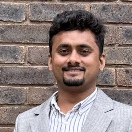

Allamaprabhu Ani
ಅಲ್ಲಮಪ್ರಭು
PhD researcher in computational mechanics & deep learning at City, St George's, with Dr Sathiskumar Ponnusami at CEMS Lab. Co-author of the field's first comprehensive review of ML for fracture mechanics (EFM, Dec 2025).

click on mecurrently obsessed with two things
- SynaCAD, an AI design partner bound by the rules of mechanics. Snap a photo of a broken kitchen-chair clip and minutes later a 3D printer is producing a stronger one. The largest version: anyone, anywhere, designing real engineered components from a sentence.
- Accelerating fracture mechanics: a PyTorch-native phase-field solver, ~8× faster on a single GPU and end-to-end differentiable, validated against four reference codes. The technical bedrock under SynaCAD's inverse-design layer. Code goes public the moment the paper does.
things I've shipped
working software > published papers, in my opinion, but I'll let you decide.
- BJSFM A bolted-joint stress-field tool I wrote during my MTech, shipped to a company through Aeroknacks, and recently re-opened on GitHub with upstream MIT attribution restored. The Lekhnitskii / de Jong analytical solution, in plain Python, for anyone who wants it.
- Geometric Transformations A MATLAB Live Script for 2D/3D affine transforms, originally written to teach my classmates and apparently still useful.
- A differentiable phase-field fracture solver PyTorch-native, runs on a single GPU, ~8× faster than the standard reference codes (validated against four of them, after I caught and corrected an earlier inflated speedup claim). Open-source release queued for the moment the next paper hits arXiv.
- A small library of classical hand-calculation tools Lug strength, Cozzone plastic-bending, fastener load-transfer, ABD matrices, column buckling. Most still in private repos; rolling them out as the design agent absorbs them.
currently building
SynaCAD, an AI design partner bound by the rules of mechanics
Describe a part in words, sketch it, photograph a broken one, or just upload your CAD, SynaCAD builds the geometry with you, runs the classical sizing checks (Bruhn, Niu, ESDU, Lekhnitskii), and emits a manufacturer-ready package: GD&T-annotated drawing, citation-grounded analysis report, and the machine-shop or 3D-printer code. Every number is computed by a validated solver, never invented by the language model.
In active development. Currently pitching it for the O'Shaughnessy Fellowship 2026.
papers I've put my name on
- A. S. Ani, R. Nakka, G. Subhash, J.-F. Molinari, S. A. Ponnusami. Machine learning for computational fracture and damage mechanics: status and perspectives. Engineering Fracture Mechanics, Dec 2025. The field's first comprehensive review.
- A. S. Ani, A. B. Deoghare. Leveraging machine learning for enhanced fatigue life prediction in aluminium alloys. Lecture Notes in Mechanical Engineering, Dec 2024.
- A. S. Ani et al. Application of neural operators to the phase-field modelling of brittle fractures. IEEE conference, 2024.
- A. S. Ani, C. V. Srinivasa. Protective coatings for bio-composites, a review. IOP Conf. Ser. Mater. Sci. Eng., 2020.
Full list (and the citation count, if you're into that) on Google Scholar.
bragspace
- 2026 · Worshipful Company of Tin Plate Workers Travelling Scholarship + Yeoman status. One of three winners across all London universities, for "AI-accelerated modelling for fracture prediction."
- 2026 · SST Dean's Award for Outstanding Teaching Support, City, St George's. Nominated by my own students. The same instinct for making complex systems explainable is what SynaCAD is built on.
- 2024 · Associate Fellow of the Higher Education Academy (AFHEA).
- 2023 · Fully-funded PhD scholarship, Modelling for Failure Analysis studentship, City, St George's, University of London. The reason I get to spend three years thinking carefully about fracture.
- 2020 · Inspiring Student Award for Mechanical Engineering, VTU.
about
This is my little scrapbook of work, half-finished ideas, and the things I keep coming back to.
Before the PhD I read a lot of Bruhn and Niu while my classmates were learning ANSYS, did an MTech at NIT Silchar, and at 24 founded a small engineering company called Aeroknacks that shipped a real structural-analysis tool to a real firm. Aeroknacks is on the shelf while I focus on the PhD; the bolted-joint tool that paid the bills is now MIT-licensed on GitHub.
In 2025 I spent some time at EPFL's Computational Solid Mechanics lab with Prof. Jean-François Molinari, working on what became our Engineering Fracture Mechanics review.
Outside the lab: Hindustani classical singing since I was 3, a discipline I keep returning to. The ragas are familiar; the riyaz is the lifelong part.
things I tell myself
- Theory makes the world go round. Creativity makes it worth living in.
- Engineering should feel like play, play with consequences, but play.
- I'd rather ship a small honest tool today than a perfect speculative one in five years.
- Imagination first, equations second. Most interesting ideas start with a sketch and a stupid question.
- Result-oriented and relentless. The working solution, not the elegant excuse.
roadmap
A public to-do list. Upvote the things you want me to ship next, the count is real and lives forever (one vote per browser; honor system).
- 2026SynaCAD v1.0, open-source, that any engineering student in the world can run locally to design and certify a real part.
- 2027+A foundation model for fracture, trained on millions of GPU-hours of validated physics simulations, deployed as a public service.
- somedayA short open video series explaining Bruhn, Niu and ESDU page by page, in the way I wish they had been explained to me.
- somedayAn open dataset of GD&T mistakes from production drawings, the wrong tolerances, the unholdable callouts, the things that cost hours on the shop floor.
- somedayA small library of solved Bruhn problems with code, for every junior stress engineer Googling at 2am.
- one dayA raga concert in front of an audience that includes engineers I admire. Adventurous goal.
places I send people
A growing list of sites and people I think are doing something genuinely interesting.
- basavaprabhuani.github.io My brother's science scrapbook. The small one's already smarter than me.
- saponnusami.com My PhD supervisor, Dr Sathiskumar Ponnusami. Runs the CEMS Lab at Queen Mary, one of the rare places where computational mechanics, materials, and AI are taken equally seriously.
- DrSimulate / gallery A beautiful gallery of simulation work. Reminds me why I love this field.
- beltoforion.de Ingo Berg's deep, careful explainers on physics and computation. The kind of writing that makes hard things obvious.
- Jay Alammar The gold standard for visualising how transformers and modern ML actually work. I learned half of what I know about LLMs here.